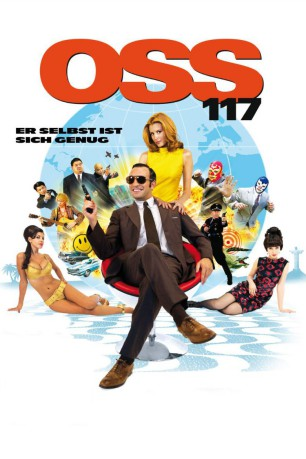

#2419 OSS 117 - Er selbst ist sich genug
Alternativ: OSS 117: Lost in Rio (Englischer Titel)
 
 IMDB-Wertung: 6.9 / 10
IMDB-Wertung: 6.9 / 10  Metascore: 58
Metascore: 58 
Nach dem Zweiten Weltkrieg sind nicht nur einige hochrangige Nazis in Südamerika untergetaucht, sie haben auch belastendes Material aus der Zeit der Okkupation mitgehen lassen. So auch der ehemalige SS-Offizier Von Zimmel, der sich nach Brasilien abgesetzt hat und eine Liste mit Namen französischer Kollaborateure mit sich führt. Diese möchte er nun dem französischen Staat verkaufen und OSS 117 soll nun nach Rio fliegen, um die Geldübergabe durchzuführen. Doch auch in Südamerika ist Frankreichs Antwort auf James Bond nicht sicher, haben doch noch ganz andere Geheimdienste ihre Finger im Spiel und zu allem Überfluss bekommt OSS 117 auch noch die israelische Agentin Dolorès an seine Seite gestellt. Mit seiner bekannt liebenswürdigen Art hat er auch schnell das Herz seiner Partnerin erobert und kann sich nun ganz mit den Gepflogenheiten der Hippie-Kultur, hungrigen Krokodilen und machtsüchtigen Alt-Nazis auseinandersetzen...
Jahr: 2009
Dauer: 101 Minuten
FSK: 12
Land: Frankreich Studio: Koch MediaTonspuren:
Untertitel: Deutsch,
Auflösung: 1080p (1920x816) Größe: 4526 MB
Genre: Action, Abenteuer, Komödie, Krimi
Regisseur: Michel Hazanavicius
Drehbuch: Jean Bruce, Jean-François Halin, Michel Hazanavicius
Soundtrack: Ludovic Bource
Darsteller:
 Jean Dujardin als OSS 117
Jean Dujardin als OSS 117- Louise Monot als Dolorès Koulechov
 Reem Kherici als Carlotta
Reem Kherici als Carlotta Serge Hazanavicius als Staman
Serge Hazanavicius als Staman Laurent Capelluto als Kutner
Laurent Capelluto als Kutner- Walter Shnorkell als Fayolle
- Guillaume Schiffman als Militaire israélien
- Ludovic Bource als Le chef d'orchestre
 Jan Oliver Schroeder als Homme de main Von Zimmel
Jan Oliver Schroeder als Homme de main Von Zimmel Rüdiger Vogler als Von Zimmel
Rüdiger Vogler als Von Zimmel Alex Lutz als Heinrich
Alex Lutz als Heinrich- Pierre Bellemare als Lesignac
- Ken Samuels als Trumendous
- Cirillo Luna als Hippie ''pomme d'amour''
 Moon Dailly als La comtesse
Moon Dailly als La comtesse- Philippe Hérisson als Mayeux
- Nicky Marbot als Castaing
- Christelle Cornil als Mlle Ledentu
- Jean-Marie Paris als Zantrax
- Alexandre Porfirio als Zantrax
 Vincent Haquin als Blue Devil
Vincent Haquin als Blue Devil- Alexandre Goncalves als Blue Devil
- Adriana Salles als L'infirmière
- Joseph Chanet als Chinois CIA
- Patrick Vo als Chinois pilote
- Pascal Parmentier als Allemand 1
- Franck Beckmann als Allemand 2
- Jean-Claude Tran als Chinois hôtel 1
- Bing Yin als Chinois hôtel 2
- Chao Chen als Chinois taxi
- Gérald Nguyen Ngoc als Chinois chalet 1
- Chen Yi-Rhe als Chinois chalet 2
- Sabrine Vin als Jeune fille hippie ''LSD''
- Alvaro Correia als Hippie 'pas en vacances'
- Emmanuel Pasqualini als Employé ambassade RFA
- Sébastien Mingam als Employé silencieux ambassade RFA
- Jean-Louis Barcelona als Pichard espion français
- Gérard Couchet als Ministre élyséen
- Donna Flandrin als La femme du militaire Washington
- Olé Erdmann als Crooner allemand
- Arthur Bispo Coutinho als Petit garçon Favela
- Naiara Amorim Da Silva als Petite fille Favela
- Yoda Bono als La chatte qui fait du bruit
- Horst Tappert als Oiseau devant , archive footage
- Fritz Wepper als Oiseau derrière , archive footage
- Laurent Larrieu als Homme de main Von Zimmel
- Robert Hoehn als Homme de main Von Zimmel
- Gregory Loffredo als Homme de main Von Zimmel
Datei: X:\2-Dilogie(N-Z)\OSS 117\OSS 117 - Er selbst ist sich genug (2009, FSK12, 1920x816).mkv seit 06.11.2015
Festplatte: HD Collection-2(A-Z)-3(A-M)
 Alle Filme aus Gruppe '2-Dilogie(N-Z)\OSS 117'
Alle Filme aus Gruppe '2-Dilogie(N-Z)\OSS 117'